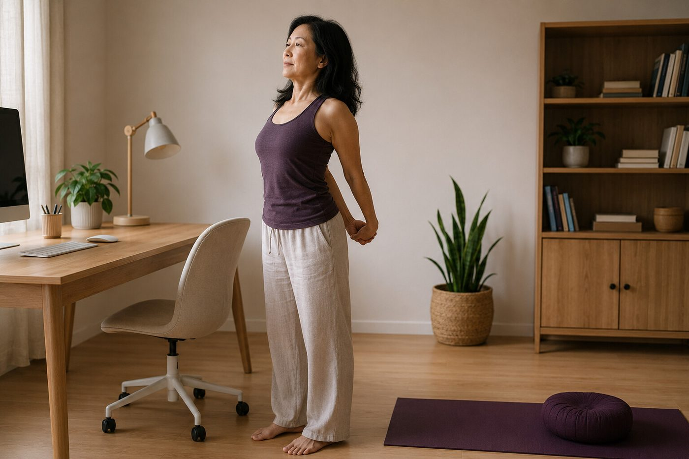

這幾種期待，壁繩瑜伽可能沒辦法馬上滿足你

- 市面上多數宣傳都在強調壁繩有多神奇，但我們選擇在開始前誠實劃定限制，避免不實期待造成中途挫折。
- 結締組織具有「黏彈性」，膠原蛋白重組需要 6 到 12 個月，壁繩無法提供「一兩堂課一夕歸位」的神話。
- 壁繩是主動的神經肌肉再學習，不是被動推拿或按摩床；若全程放空不主動用力，無法重塑大腦體態記憶。
- 每週 1 小時的課堂拉回，抵擋不住日常 100 多小時的久坐崩塌；唯有同步調整生活模式，才能長久扎根。
- 壁繩不是醫療行為，急性發炎、神經根壓迫麻痛或馬尾症候群等紅旗症狀，必須第一時間求診專科醫師。
大部分介紹壁繩瑜伽的文章，都在不厭其煩地描述它如何減壓、如何開胸、如何讓人感到飄逸放鬆。然而，作為深耕體態教育的專業空間，我們想在一開始就誠實地把話說清楚：如果你帶著某些不切實際的幻想走進教室，壁繩瑜伽不僅沒辦法馬上滿足你，甚至可能會讓你大失所望。建立正確的期待邊界，不是勸退，而是讓你用理性與科學的態度，對待自己的身體。
為什麼我們堅持在開始前，把期待與客觀邊界說清楚？
在長年的教學現場中，我們見過太多懷抱「求醫心態」或「速成心態」的學員。當學員以為「花錢買了課，躺在那裡身體就會自然變好」，往往會在上了兩三堂課後，因為「外觀沒有立刻像修圖一樣改變」而產生嚴重的挫折感並放棄。體態的退化與形變，是人體生物力學長年累積的結果；唯有在科學的認知下理解組織適應的客觀規律，你才能踏實地見證身體的質變。
期待一：期待「一兩堂課一夕歸位、立竿見影根治十年沉痾」
許多人常問：「老師，我下週要去拍婚紗（或參加面試），上兩堂壁繩課能不能把我的駝背跟圓肩徹底調好？」答案是：絕對沒辦法。
從人體組織學與生物力學分析，這背後受制於結締組織的物理特性：
- 結締組織黏彈性（Viscoelasticity）與塑性形變：你的肌腱、韌帶、關節囊與深層胸腰筋膜，在過去十幾年的久坐與低頭習慣中，經歷了緩慢的力學重塑。短縮的膠原纖維（Collagen Fibers）排列極其緻密，水分含量下降。
- 膠原代謝更新週期：人體膠原纖維的自然代謝半衰期約為 300 到 500 天，意味著筋膜結構的實質重組至少需要 6 到 12 個月。在單次壁繩懸掛牽引後，你確實會感到脊椎被拉長、關節間隙微增、胸口豁然開朗，但這屬於「暫時性彈性拉伸（Elastic Deformation）」；如果沒有持續且規律的刺激，組織會在 24 到 48 小時內依循記憶回彈。
- 外觀改變永遠滯後於神經感知：早期的進步通常是隱性的——呼吸深度增加、肋骨不再劇烈外翻、肩膀關節發出喀喀聲的頻率減少。若你只用捲尺或鏡子拍照作為唯一衡量標準，前幾週很容易感到迷惘。
期待二：期待「完全被動放空、躺著讓老師或繩子幫我喬正」
壁繩瑜伽絕不是「吊著的整復床」或「被動的拉筋機」。如果你期待的是像去按摩館一樣，整個人完全放軟放空，任由老師動手去扳、由繩子死死拉扯你的關節，這完全違背了壁繩的核心哲學：
- 被動卸載不等於主動控制：繩索的物理支撐，是為了幫你「降低無謂的關節壓力」，讓你有餘裕在大腦中重新繪製正確的動作控制藍圖。
- 神經肌肉主動募集（Active Neuromuscular Recruitment）：在懸掛開展的同時，老師會引導你主動把肩胛骨往下拉、主動啟動下腹橫肌收緊、主動透過坐骨結節往遠端延展。這種主動的神經訊號傳遞，才能在大腦皮質的運動區（Motor Cortex）建立全新的體態中立記憶。
- 被動懸掛的潛在風險：如果在毫無肌肉張力控制的狀態下，把全身重量毫無防備地丟給繩帶硬掛，極易引發關節囊過度牽拉與韌帶鬆弛（Hypermobility），反而迫使周圍肌肉引發代償性急性痙攣。

期待三：期待「只靠每週上課 1 小時，日常 167 小時繼續低頭駝背塌腰」
一週有 168 個小時。即便你每週非常認真地上了一堂 60 分鐘的壁繩課，剩下的 167 個小時，你依然維持著：癱軟在沙發上看電視、雙腿盤坐在辦公椅上打電腦、站立時永遠將重心壓在單側骨盆（三七步）。
在運動生物力學上，這稱為「力學累積暴露法則（Cumulative Mechanical Load）」：
- 組織潛變效應（Tissue Creep）：人體結締組織具有「隨持續負載而緩慢形變」的物理特性。每天 8 到 10 小時的前傾低頭力矩，對頸椎與胸椎造成的機械變形，其累積總量是每週 1 小時瑜伽課的百倍以上。
- 拉扯抵銷：身體永遠由「佔據時間最長的姿勢」所塑形。若日常習慣完全不變，上課充其量只能算是一場「延緩惡化」的防守戰，而無法真正逆轉體態。
- 日常微調才是終極解方：課堂的核心價值在於「體操遷移」——學會如何用坐骨承重坐直、學會每工作 40 分鐘起身做胸椎微伸展、學會將手機拿至胸口視線水平。日常微調哪怕只有 5%，與課堂結合便能產生巨大的加乘複利。

期待四：期待「靠壁繩快速燃脂暴瘦、取代心肺有氧與大重量阻力」
有些人看到壁繩動作線條優美，誤以為它是高熱量消耗的減重黑科技。我們必須誠實說明：
- 代謝能量系統：壁繩瑜伽屬於低心率、重神經控制與姿勢肌耐力的結構調整訓練，主要啟動第一型慢縮肌纖維（Type I Slow-Twitch Fibers），每小時的卡路里消耗量大約介於 150 到 250 大卡之間，遠不及高強度間歇（HIIT）或跑步等心肺有氧運動。
- 假性小腹消除 vs 真正脂肪代謝：當骨盆前傾透過深層腹橫肌與臀肌喚醒而回到中立位時，內臟不再向前傾瀉，視覺上下腹部會立刻收緊平坦、臀部線條上提，給人「瘦了一圈」的視覺效果；但這屬於「力線排列重置（Biomechanical Alignment）」，體內的脂肪細胞數量並未減少。真正的減脂仍必須遵循能量守恆定律，靠科學的飲食控制與全身性代謝訓練來達成。
臨床急症紅旗（Red Flags）：哪些情況嚴禁直接上課？
體態教育的絕對底線是醫學安全。壁繩瑜伽絕不是醫院，老師更不是醫師。如果你或身邊的朋友出現以下任何紅旗警訊，請停止任何運動嘗試，立即就醫：
- 急性神經根壓迫症狀：單側頸部或腰部劇痛，伴隨如電擊般向下放射至手背或腳掌、肢體劇烈麻木刺痛、手部握力驟降（如拿不住杯子）或腳踝無力下垂（垂足）。
- 馬尾症候群（Cauda Equina Syndrome）：會陰部鞍區（肛門與生殖器周圍）感覺喪失麻木，伴隨排尿困難、尿瀦留或大便失禁，此為外科急症，延誤恐造成永久性神經壞死。
- 急性未癒之組織挫傷或骨折：剛發生閃到腰、腳踝急性扭傷（紅腫熱痛未退）、車禍撞擊後，或未經醫師 X 光確認骨骼完整性前。
- 重度骨質疏鬆症：雙能量 X 光骨密度檢測（DXA）T-score 小於 -3.0，或有自發性脊椎壓迫性骨折病史者，壁繩的高承重懸掛與深層扭轉可能誘發微骨折。
期待對齊之後，踏出扎實的第一步
看清了限制與真相，如果你依然願意用尊重科學與身體律動的態度開始，壁繩瑜伽將會是你重構身心力線最堅強的盟友。我們建議你先透過專利 AI 2D 體態檢測，精確捕捉自己的幾何排列數據，由資深老師當面提供 20 分鐘客觀解讀，為你量身規劃最安全的練習藍圖。
預約首次 NT$299 AI 體態檢測（原價 NT$699）本文為體態結構與運動生理學衛教知識分享，非醫療診斷或治療處方。若有慢性病史、神經壓迫或骨科舊傷，請先諮詢合格醫療專業人員。
常見問題
壁繩瑜伽練習多久能看見體態改善？能給一個具體的時間表嗎？
誠實的答案是：沒辦法給出任何保證的絕對天數，因為結締組織（肌腱、韌帶與深筋膜）的新陳代謝重塑需要 6 到 12 個月，且進度深受每個人原有的骨骼歪斜程度、年齡及每週練習頻率影響；通常多數規律練習者在 3 到 4 週內會先感受到關節活動度變順、呼吸通暢與局部緊繃感降低，但肉眼可見的體態軸線變化屬於深層生理適應，必須耐心透過時間累積。
上壁繩瑜伽課時，是不是像整復推拿一樣被動放鬆就好？
完全不是。壁繩瑜伽是「主動的神經肌肉再教育（Active Neuromuscular Re-education）」，繩帶的角色是替關節減壓並提供力線參考，真正在動、在感知、在主動啟動深層核心穩定肌的人是你自己；老師會在旁引導呼吸與排列角度，但無法代替你的大腦去建立動作控制，若全程放空被動懸掛，不僅無法建立體態記憶，還可能過度牽拉被動關節囊。
如果我下課後完全不改掉低頭盤腿等習慣，練習還有用嗎？
每週上課 1 到 2 小時的良性刺激，無法完全抵銷日常 100 多個小時不良姿勢帶來的「組織潛變（Creep Effect）」負擔；若生活習慣完全不變，身體會在課堂拉回與日常推歪之間反覆拉扯，進步幅度會被大幅削弱；唯有將課堂中學會的骨盆坐骨扎根與延伸感覺帶回日常辦公椅與沙發，體態才能長久維持不復發。
壁繩瑜伽可以幫助減肥、燃燒腹部脂肪嗎？
壁繩瑜伽的核心效益在於關節減壓、本體感覺提升與深層姿勢肌耐力，屬於低心率、高控制度的結構訓練，其熱量消耗遠低於高強度有氧或大重量阻力運動；改善骨盆前傾後雖然能消除內臟前凸造成的「假性小腹」，讓腰腹線條在視覺上更緊實顯瘦，但實質脂肪代謝仍必須遵循熱量赤字原則與飲食控制。
如果我目前有強烈的坐骨神經痛或關節劇痛，可以直接來上課嗎？
絕對不能。壁繩瑜伽是體態調整與運動學習，絕不能取代正規醫療處置；若處於急性發炎腫痛期，或伴隨單側下肢麻木刺痛、肌肉無力萎縮、排尿排便失禁（馬尾神經壓迫急症紅旗），請務必第一時間至神經外科、骨科或復健專科接受醫學檢查，待急性病灶穩定且經醫師許可後，再進行漸進式動作練習。